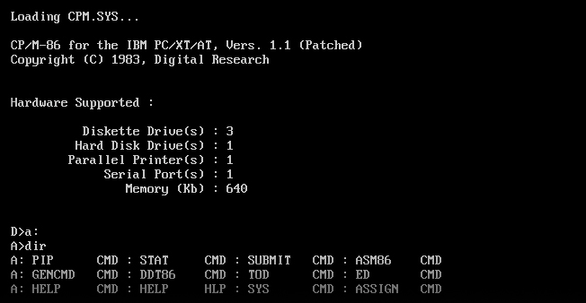

In the time of the micro computer software were written specifically for each computer, as they all came with their own operating system build into them. Burned into their microchips where the commands that they understood, and programmers needed to write their programs to the specific machine. The amount of software available for a specific computer played a significant role in its success.
Program compatibility
This is one of the reasons for the huge success of the Commodore 64. With it’s powerful graphics and sound processors
it was a perfect platform for games and it gave programmers a strong platform to develop all sorts. Of the most famous
ones one could mention:
- Archon: The Light and the Dark (1983)
- Impossible Mission (1984)
- Pitstop II (1984)
- Elite (1985)
- Leaderboard Golf (1986)
- IK+ (1987)
- InternationalSoccer (1988)
- Grand Prix Circuit (1989)
- Buck Rogers: Countdown to Doomsday (1990)
- Creatures 2: Torture Trouble (1992)
- Mayhem in Monsterland (1993)
The software operating system
A contester to the micro computer was IBM’s so-called Personal Computer or PC, although it was much pricier and did not find its way into normal homes straight away. The IBM PC used a software operating system. This had to load on startup, but made it easier to update - simply because you did not need to buy a completely new piece of hardware. The OS (for Operating System) was called MSDOS, this was short for Micro-Soft Disk Operating System (yes, they used a dash in their name in the early days). The code was based on the UNIX operating system, although greatly simplified.